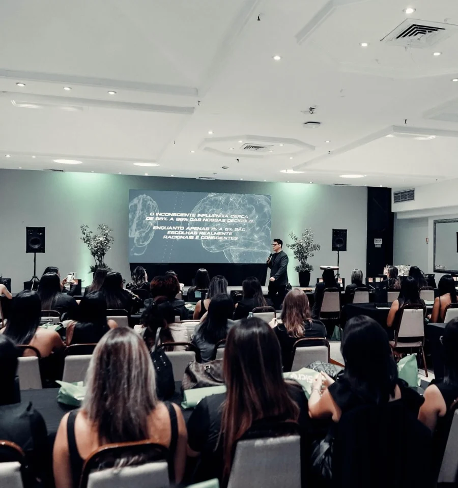

Como persuadir sem abrir a boca
Antes da primeira palavra, uma imagem já pode despertar uma lembrança. Nesta palestra sobre branding, Sandro Bello explora como experiências da infância e da vida adulta influenciam a maneira como percebemos uma marca e tomamos decisões, muitas vezes sem perceber essa influência.
Contrate a minha palestra

Da memória à decisão
O que o olhar reconhece. Uma cor, um gesto ou um ambiente pode evocar uma experiência antes que a pessoa consiga explicar por que aquilo lhe parece familiar.
Como se constrói o rapport. Sandro mostra como escolher sinais visuais que dialogam com o repertório do público e criam uma sensação de reconhecimento e conexão com a marca.
A jornada de decisão. A partir de referências da psicanálise e do comportamento humano, Sandro examina o papel dos gatilhos psicológicos nesse percurso, da primeira associação ao momento da escolha.
Sobre o palestrante
Sandro Bello é pesquisador, fotógrafo há mais de 20 anos e autor de A Mente que Habita o Branding. Sua pesquisa aproxima imagem, comportamento humano e decisões de negócios. Tem formação em hipnose e PNL Master.
É CEO da Revista Players e da agência de palestrantes Talkers.
Ao longo da carreira, fotografou Paulo Vieira, Jordan Belfort, cuja história inspirou o filme O Lobo de Wall Street, Dilma Rousseff, Lula, Elaine Orives, Michel Teló e Andressa Mallinsk, entre outras personalidades.